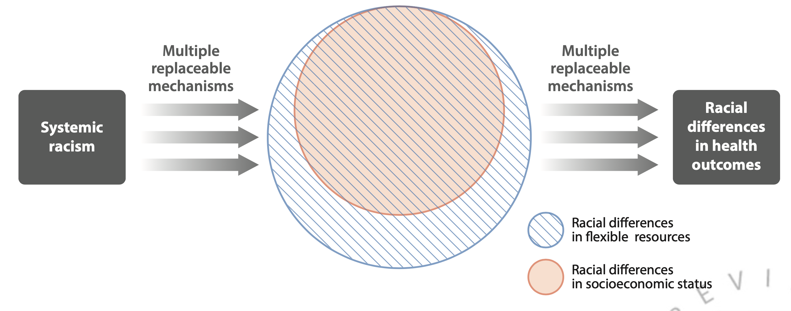
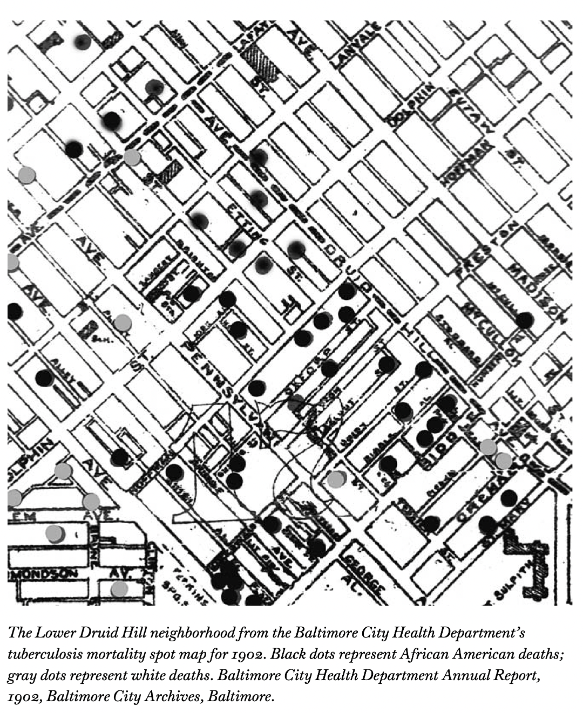

Last day!
PUBHLTH 405
Social History of Infectious Disease
University of Michigan School of Public Health
Jon Zelner
jzelner@umich.edu
epibayes.io
Agenda
Where have we been?
End of term feedback üîÅ
Notes to future 405-ers üìî
Final project work time
Coming in for a landing

Johnson summarized our goals in this class perfectly in The Ghost Map üëª
The history of knowledge conventionally focuses on breakthrough ideas and conceptual leaps. But the blind spots on the map, the dark continents of error and prejudice, carry their own mystery as well. How could so many intelligent people be so grievously wrong for such an extended period of time? How could they ignore so much overwhelming evidence that contradicted their most basic theories? These questions, too, deserve their own discipline — the sociology of error. (Johnson 2007, 15)
Everyone is susceptible to explanations that piggyback on our biases and emotions
No one died of stench in Victorian London. But tens of thousands died because the fear of stench blinded them to the true perils of the city, and drove them to implement a series of wrongheaded reforms that only made the crisis worse. (Johnson 2007, 12)
Theoretical perspectives like Rosenberg’s are essential for making sense of and comparing epidemics
Perception implies explanation. Certainly this is the case in epidemics when fear and anxiety create an imperative need for understanding and thus reassurance. (Rosenberg 1992, 293)
This is not to suggest a democracy among hypothetical etiologies; some explanations approximate the natural world a great deal better than others (and thus provide different real-world choices). But the continuity that I seek to emphasize relates to function, not specific content; and that function is the unavoidable act of explanation itself. (Rosenberg 1992, 294)
We have to understand infection inequity in terms of conflict and competing material interests between social and economic groups
Link and Phelan’s explanation of systemic racism as a fundamental cause of disease inequity.
Our interpretation of data is motivated and shaped by these biases

Snow and other showed us how to break down these misunderstandings by bricking together compelling explanations with diverse data sources.

Infection history may not repeat itself exactly, but it often rhymes
“A true epidemic is an event, not a trend.” (Rosenberg 2020)
Uncertainty breeds wrongheaded explanations that are easy to debunk in hindsight than in the heat of the moment
Scapegoats channel our anxiety and fear away from powerful people an institutions to weaker ones
Map and phylogenetic tree of early HIV-1 sequences which thoroughly debunk the “Patient Zero” theory of the origins of HIV in North America (Worobey et al. 2016)
When you hear we have the tools üõ†Ô∏è it‚Äôs important to ask who is telling you this and why‚Ķ
Making progress in difficult times requires clarity about what’s actually going on
The US has "learned to live with covid" not by effectively addressing the problem, but through a broad deliberate effort to erode empathy, break solidarity, desensitize the public to mass illness and mass death, and inculcate a sense of hopelessness and futility
— wsbgnl ((wsbgnl?)) December 7, 2022
Big, collective problems have to be addressed by big, collective action üé¨

ACT UP Protest at the FDA (1988)
At the beginning of the term, we asked: Why should we care about public health history?
“History sensitizes us to the interplay of the varied social, political, and economic forces that positioned public health at different moments in time, regardless of the areas of responsibility the field claimed at the time.” (Fairchild et al. 2010)
If our whirlwind üå™Ô∏è historical tour has been successful, we have all been left with lessons that are useful for the present and future
“We can choose to walk through it, dragging the carcasses of our prejudice and hatred, our avarice, our data banks and dead ideas…Or we can walk through lightly, with little luggage, ready to imagine another world. And ready to fight for it.” (Roy 2020)
Before you go…
Please take a few minutes to fill out this survey about your experiences in the course and advice to future students:
Project group work time
Please make sure you have filled out information on your preferred approach to sharing your projects in the google doc.
Include contact info for all team members.
Submit final project via email to me by end of the day on Weds 12/14.
When you submit, I will send you a link to a form asking for your self-assessment of 85% of your final grade and your assessment of your and your group’s project participation (15%).
Thanks!
To all of you for teaching us about your project topics and exciting approaches to them.
To Kelly for adding insight and helping with discussions and projects.
Please stay in touch (whether you are graduating or staying at UM)!